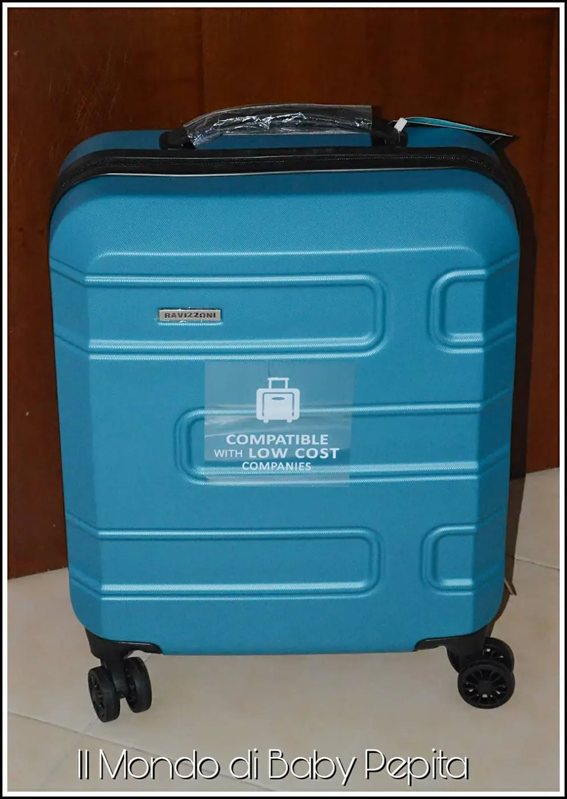
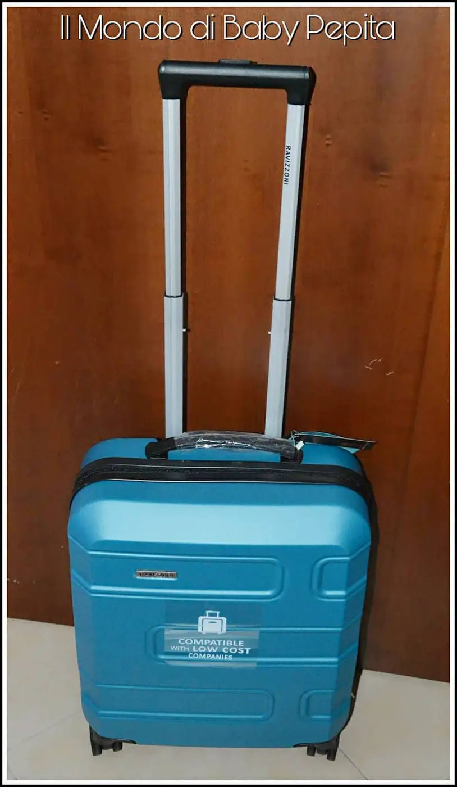
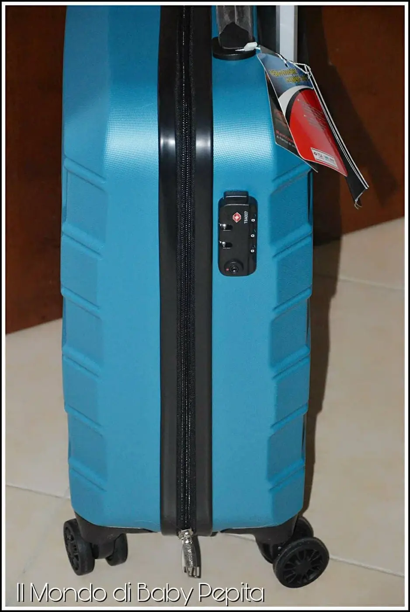
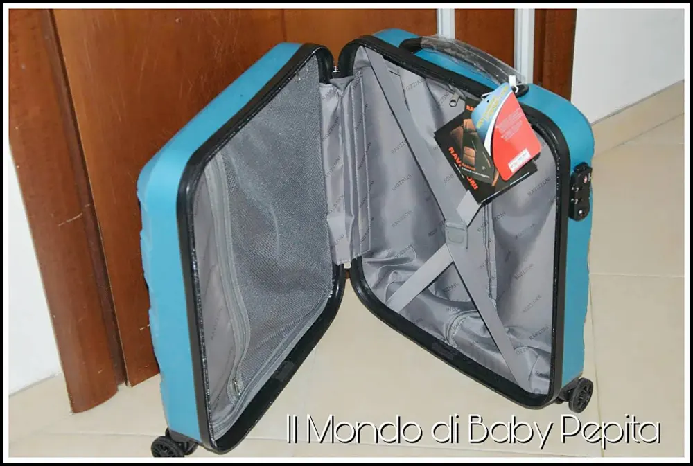

Detto fra noi e il mio trolley
Conoscete Detto fra noi? È un portale di dove ognuno può attingere a notizie o ancora più importante, qualora testa prodotti, può dire la sua e far sapere agli altri la propria opinione.
È un sito di passaparola con idee sia su prodotti, che ricette o anche idee di casa,tempo libero, cura del corpo. Insomma iscrivendosi a questa piattaforma, potremo essere aggiornati su ogni cosa e aggiornare di tutte le cose che proviamo e testiamo. In più, restando attivi su questo sito è possibile partecipare alle varie attività. Infatti Detto Fra Noi dà l'opportunità di partecipare a concorsi ed essere scelti tra un tot. di persone e ricevere a casa dei kit che poi servono a fare il passaparola da vicino tra amici e parenti.
Dopodiché il sito vi farà rispondere a sondaggi, questionari e inserire foto che servono solo ed esclusivamente per far conoscere ancora una volta la nostra opinione agli utenti.
Un portale dedicato interamente al passaparola e alla conoscenza di ogni cosa.
Recensire e testare è diventata la pubblicità migliore e far sapere agli altri la propria esperienza con cose e articoli è diventata la cosa più veritiera perchè ognuno dice realmente ciò che pensa senza una ricompensa.
Sito di raccolta:
Inoltre il sito mette a disposizione una raccolta punti, quest'anno non so se ricomincia.
Ma l'anno 2017 ho partecipato anch'io ad una raccolta punti che consisteva condividere e commentare, essere attivi sul portale e accumulare punti.
Arrivati ad una soglia, Detto Fra Noi stila un catalogo premi che potranno essere richiesti del tutto gratuiti.
Trolley:
Io ho chiesto un trolley Cabina con un totale di 1.000 punti accumulati nel giro di 4-5 mesi perchè ho iniziato tardi la mia raccolta.
Il trolley di questo bellissimo azzurrino mi è stato recapitato a casa in forma del tutto gratuita.

È davvero bellissimo, di una misura media.
È dotata di sacca interna per scarpe, doppia tasca per far entrare più cose. È rigida e leggerissima.

Ed ha anche un il codice lucchetto.

Cioè io la trovo bella bella. Un vero regalo fatto a regola d'arte.

Grazie a Detto Fra Noi e alle sue iniziative.
Se siete interessati a leggere le varie recensioni, commentare e dire la vostra, magari sarete fortunati e nel 2018 ripartirà un'altra raccolta punti. Non perdetevi un portale così interessante e ricco di idee ed informazioni.
Esiste anche un gruppo